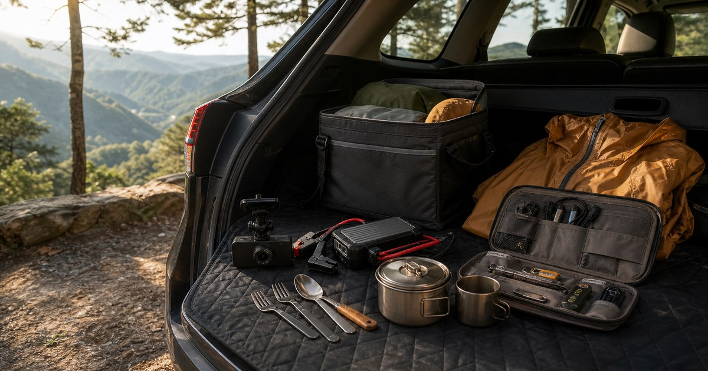

自駕與露營路上的備用清單：行車記錄器、救車電源、餐廚與戶外小物
自駕與露營前先把車內、餐廚、雨天與回家收納分區，備用品才不會變成車廂雜物。整理移動、旅行、露營與戶外備品的選購順序，幫助讀者在不同天氣與行程中維持輕盈準備。並補充適合台灣日常的檢查重點與延伸閱讀，方便搜尋後快速掌握方向。

自駕旅行和輕露營的備用品很容易越買越多：行車記錄器、救車電源、鍋具、收納包和雨具全部放進車裡，最後卻沒有人知道在哪一格。備用清單的重點不是塞滿後車廂，而是讓關鍵用品在需要時找得到。
先把真正會發生的場景排出來
上路前檢查、途中臨停、營地用餐與回家整理，是自駕用品最容易失序的四段。
先不要急著把行車記錄器、救車電源、餐廚、戶外小物一次買齊。比較穩的做法，是把一天或一次出門會經過的動作寫下來：拿取、使用、暫放、清潔、歸位。只要其中一段沒有位置，物件很快就會散落。
Elite Fashion 編輯團隊的判斷是：先分車用、餐廚、天候與收納四區，再決定補什麼。 這個順序能避免把預算花在照片裡好看、但生活中不會常用的品項上。
- 先確認行車記錄器的使用位置。
- 再看救車電源是否每天會用。
- 最後才補低頻或送禮型用品。
常用物要靠近手，不常用物要有邊界
車用電子品、電源線、餐廚工具和戶外小物要分袋放，不要和衣物、食品或濕物混在一起。
如果一件物品每週只用一次，它不需要佔據最順手的位置；如果每天都要用，就不該被壓在備品下面。行車記錄器、救車電源、餐廚、戶外小物的採買重點，是讓使用頻率和收納位置一致。
常見錯誤是買了看似安心的備用品，卻沒有確認規格、充電狀態、固定方式和收納位置。 下單前可以先看商品頁的尺寸、材質、適用範圍、保存方式和清潔限制，再決定它適合放在哪裡。
- 常用品留在視線高度。
- 備品標示開封或補貨日期。
- 低頻用品集中，不分散在每個角落。
Elite 嚴選
品牌與店家只放在適合的情境裡比較
潛伏者行車記錄器系列.批發.零售 和 philo飛樂 / arlink 生活美學 可以先從本篇核心情境查看，但不要把單一店家當成唯一答案。真正該比較的是用途、尺寸、材質、保存條件與退換規則。
潛伏者行車記錄器系列.批發.零售、philo飛樂 / arlink 生活美學、大正餐具批發零售、🇹🇼 🏃♂️趴趴走🏃♀️戶外部品店 🇹🇼、戶外趣 這些店家適合放在同主題選物中作為參考。本文不寫死價格、庫存、活動或商品規格，因為這些資訊都會變動，應以下單前商品頁公告為準。
若某個品項涉及身體、兒童、寵物、食品、車用或戶外安全，請把商品標示放在風格之前。看起來順眼只是第一步，能不能正確使用和維護才是長期留下來的原因。
台灣生活裡最容易被忽略的是收尾
山區天候變化快，雨具、照明和收納袋要比裝飾性露營小物更優先，也要避免遮擋駕駛視線。
很多採買清單只寫出門前要準備什麼，卻沒有寫回家後要怎麼收。濕物、粉塵、食品、線材、玩具或開封用品如果沒有回收位置，下一次使用前就會重新混亂。
比較好的做法，是替每一類物件設一個結束動作：清潔、晾乾、補貨、充電、貼標或放回固定袋。這些收尾動作比買更多收納盒更能維持秩序。
- 把回家後的第一個動作寫清楚。
- 需要清潔或晾乾的用品不要密封收起。
- 補貨訊號要比完全用完更早出現。
不適合的情境要先排除
車用電子、救援用品與戶外裝備請依商品規格、車型限制與安全規範使用，不承諾安全結果。 如果商品頁標示和你的生活情境不一致，就算外觀、價格或評價吸引人，也應該先暫緩。
送禮或替家人採買時，請避免用自己的偏好替對方做完整決定。尺寸、氣味、材質、飲食、使用習慣和清潔意願，都會影響一件物品能不能被真正使用。
這也是這類選購整理的共同原則：不要把購物清單寫成標準答案，而是提供一套可以回到自家動線檢查的順序。
最後一輪確認：尺寸、保存、清潔與替換
每次出發前看電量、線材和餐具清潔；回家後把車用用品放回固定箱，下一趟才不會從零開始。
下單前請回到商品頁確認行車記錄器、救車電源、餐廚、戶外小物的規格、材質、配送、保存和退換資訊。若資訊不足，先收藏或改找標示更清楚的品項，不需要急著一次買完。
也可以替這類用品留一張簡單備忘：買了什麼、放在哪裡、多久會用完、誰最常使用。下一次補貨時，這張備忘會比重新瀏覽一長串商品更可靠。
能長期留下來的物件，通常不是最吸睛的那一件，而是你知道放哪裡、怎麼清、何時補、誰會用的那一件。採買到這一步，才比較像真的替生活減少摩擦。
同主題品牌參考
FAQ
這份清單可以直接照單購買嗎？
不建議。請先依自己的空間、家庭成員、寵物狀況、出門路線或工作型態盤點，再回到商品頁確認規格與限制。
價格、活動或庫存可以以文章為準嗎？
不可以。價格、活動、庫存、規格、尺寸與配送條件都可能變動，請以下單前看到的 momo 商品頁或店家頁公告為準。
涉及兒童、寵物、食品、照護或運動用品時要注意什麼？
請優先看商品標示、適用對象、保存方式與專業建議。本文只提供一般生活整理與選購順序，不宣稱安全、健康、學習、營養或恢復效果。
下一步建議
先用先分車用、餐廚、天候與收納四區，再決定補什麼。的順序盤點，再回到商品頁確認規格、材質與使用限制。
重要警語
本文為一般自駕與戶外備用品整理參考，不構成行車安全、救援或露營專業建議；車用與戶外用品請依商品規格和實際情境使用。
本文含品牌／商品導購連結；若你透過部分商品連結前往選購，Elite Fashion 可能取得合作收益。本文仍以編輯判斷與使用情境整理為主，價格、規格、活動與庫存請以商品頁公告為準。